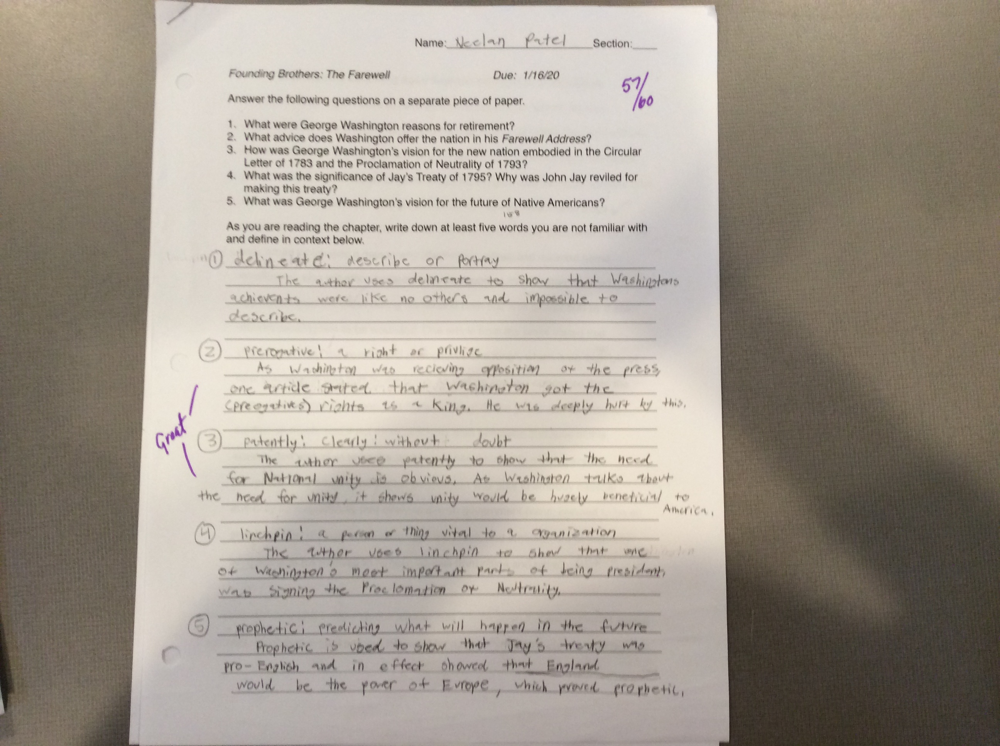

My Literature Artifact is my Q and A's. I worked hard on my Q and A's and used my strength of not procrastinating on this assignment. By using my strength I was able to spend more time on my Q and A's which made them more detailed and include my analysis. This Artifact shows that I tried hard on this assignment and also shows I am willing to make revisons to attain the highest possible standard. This is how I got an 100%.
Here is a picture of my Literature Artifact
My Social Studies Artifact is my assignment on the farewell address. Our class had to read a chapter of The Founding Brothers and answer questions. I worked hard on this assignment and made detailed annotations to help me understand the questions. This shows how I am working on my stretch by writing detailed annotations that helped me in writing this assignment. Although this artifact doesn't show a habits of mind, it shows I am working hard on achieving my stretch.
Here is a picture of my Social Studies Artifact
My Spanish Artifact is my script of a spanish project. My spanish project script is about a doctor who doesn't know how to prescribe medicine to a patient. My Spanish project helped me on my collaboration skills while also teaching me more vocabulary. Although this project doesnt reflect my strength or stretch, it shows I am able to work successfully with others. This project also shows I can listen to others an understand what they are saying which reflects on my habits of mind.
Here is a picture of my Spanish Artifact
My Math Artifact is my math notes. I make detailed math notes during the lecture that helps me a lot during the test. This reflects my stretch because by writing detailed notes it has helped me be more prepared during the test. Although my math notes don't reflect a certain habit of mind, it shows I am trying to achieve my stretch by trying hard to achieve the best standard.
Here is a picture of my Math Artifact